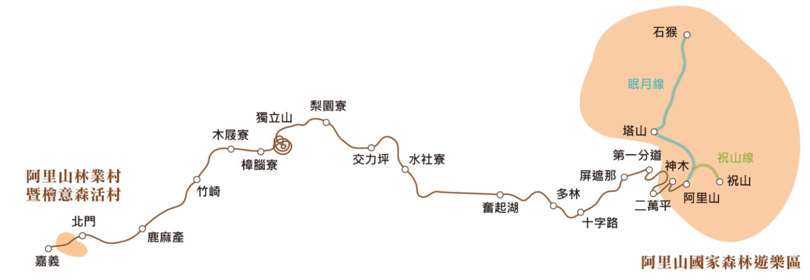
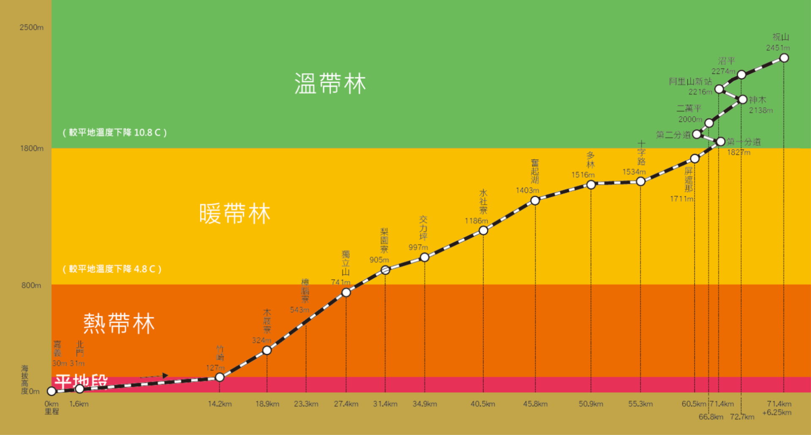

阿里山林業鐵路位於臺灣西南部中央山脈南部西側，自嘉義市起，經過嘉義縣竹崎鄉、梅山鄉，至阿里山鄉，主線鐵路長71.3公里，祝山線途經南投縣信義鄉，沿線管轄範圍包含嘉義市阿里山林業村、檜意森活村等。
本轄林區海拔高低差懸殊，由熱帶、暖帶、溫帶至寒帶，形成垂直森林帶，並構成闊葉樹林、針闊葉混淆林及針葉樹林等不同林型。針葉樹林主要樹種為紅檜、臺灣杉、柳杉、杉木及其他松類；闊葉樹則以樟楠類、櫧櫟類為主。
地處臺灣亞熱帶氣候區之中央，由平地海拔40多公尺至臺灣最高峰3,952公尺之玉山，高低懸殊，氣溫隨著高度上升而遞減，形成熱、暖、溫、寒等4種氣候型。年平均降雨量約3,000毫米左右，5月至9月為雨季、10月至翌年4月為乾燥季節。
